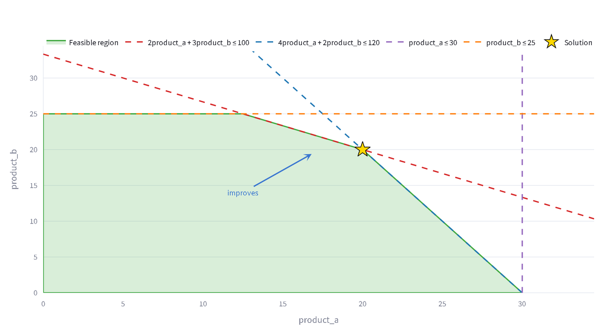
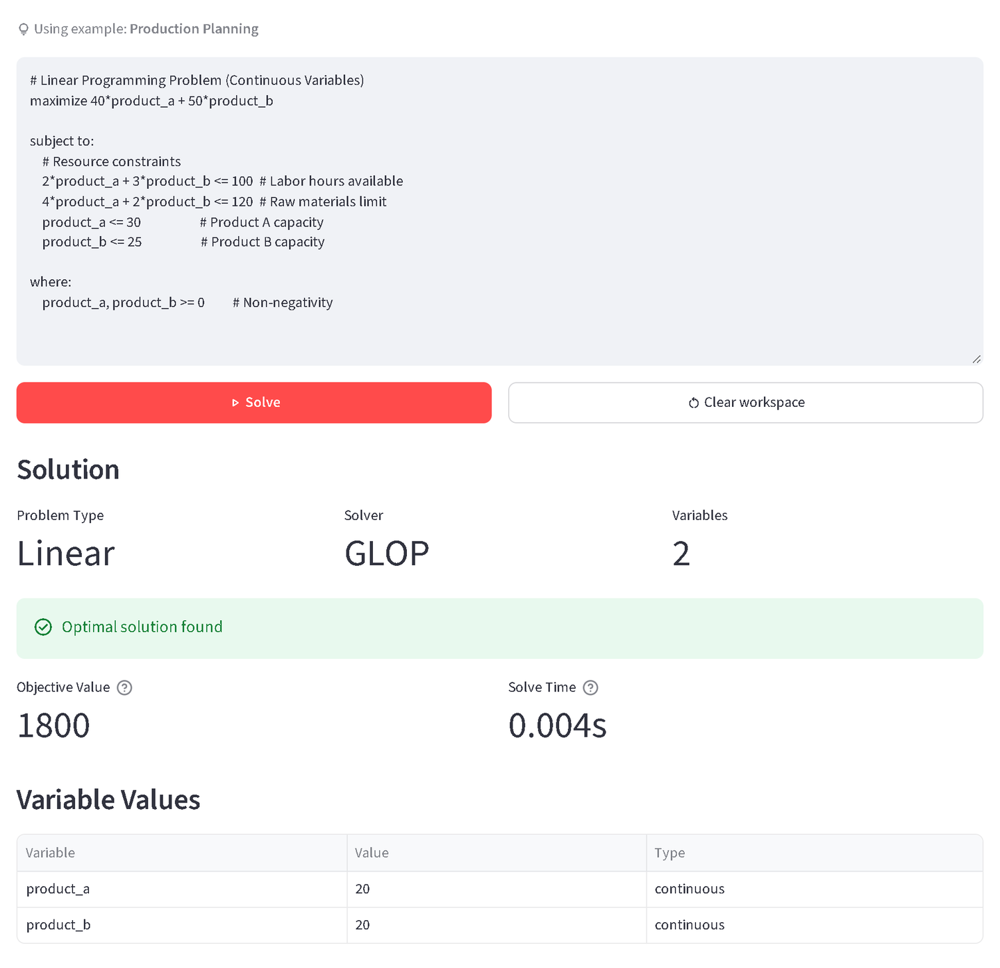

SolvedOR, teaching Operations Research by doing it

SolvedOR, ensinando Pesquisa Operacional na prática
The problem
Industrial Engineering students at UFAM learn Operations Research mostly on paper. Solvers exist, but they expect code or rigid formats, so students spend their energy on syntax instead of on the model.
What I built
A Streamlit app where students type a linear or integer programming model in the notation their textbook uses: an objective, the constraints and, if needed, bounds on the variables. A parser I wrote with pyparsing turns that text into a model for Google OR-Tools, which solves it with GLOP for linear problems and SCIP for integer ones. When something is wrong, the error says which line. For problems with two variables the app draws the feasible region from the student's own constraints, with each constraint line, the direction the objective improves and the optimal point. A gallery of examples gets students started, and the whole interface works in English and Portuguese.

The teaching approach comes from Active and Problem-Based Learning: students learn by modeling real problems themselves, not by watching someone else solve them.
Result
It became my bachelor thesis in Industrial Engineering. When students tried it, 80% rated building a model in the app easy or very easy.
In 2026 I went back to it. I fixed a bug where unbounded problems were reported as infeasible, replaced a plot that only ever showed one example with the real feasible region, and added a test suite of over 170 tests, including headless runs of the whole app. The code and the article's LaTeX source are open source, and the app is live.
Stack: Python, Streamlit, Google OR-Tools, pyparsing, Plotly
O problema
Os alunos de Engenharia de Produção da UFAM aprendem Pesquisa Operacional quase sempre no papel. Solvers existem, mas pedem código ou formatos rígidos, então os alunos gastam energia com sintaxe em vez de gastar com o modelo.
O que eu construí
Um app em Streamlit onde os alunos digitam um modelo de programação linear ou inteira na notação que o livro deles usa: uma função objetivo, as restrições e, se precisar, limites nas variáveis. Um parser que eu escrevi com pyparsing transforma esse texto num modelo pro Google OR-Tools, que resolve com GLOP os problemas lineares e com SCIP os inteiros. Quando algo tá errado, o erro diz em qual linha. Pra problemas com duas variáveis, o app desenha a região viável a partir das restrições do próprio aluno, com cada reta de restrição, a direção em que o objetivo melhora e o ponto ótimo. Uma galeria de exemplos ajuda os alunos a começar, e a interface inteira funciona em inglês e português.
A abordagem de ensino vem da Aprendizagem Ativa e da Aprendizagem Baseada em Problemas: os alunos aprendem modelando problemas reais eles mesmos, e não vendo outra pessoa resolver.
Resultado
Virou meu TCC em Engenharia de Produção. Quando os alunos testaram, 80% avaliaram montar um modelo no app como fácil ou muito fácil.
Em 2026 eu voltei nele. Corrigi um bug em que problemas ilimitados apareciam como inviáveis, troquei um gráfico que só mostrava um único exemplo pela região viável de verdade e adicionei uma suíte com mais de 170 testes, incluindo execuções headless do app inteiro. O código e o fonte em LaTeX do artigo são open source, e o app tá no ar.
Stack: Python, Streamlit, Google OR-Tools, pyparsing, Plotly